环大陆地区短剧
环大陆地区短剧 · 第一集
正在连接在线视频…
视频简介
灰西装女职员在一处接待台核对交易，随后在工位发现账单并当面质问白外套同事。餐厅与手袋店消费的画面穿插说明金额落差，争执升级至公开推搡。最后切到一间管理办公室，女经理把案卷放上桌，话题转到是否继续接案。
在快手观看原视频 ↗制作资产
角色资产
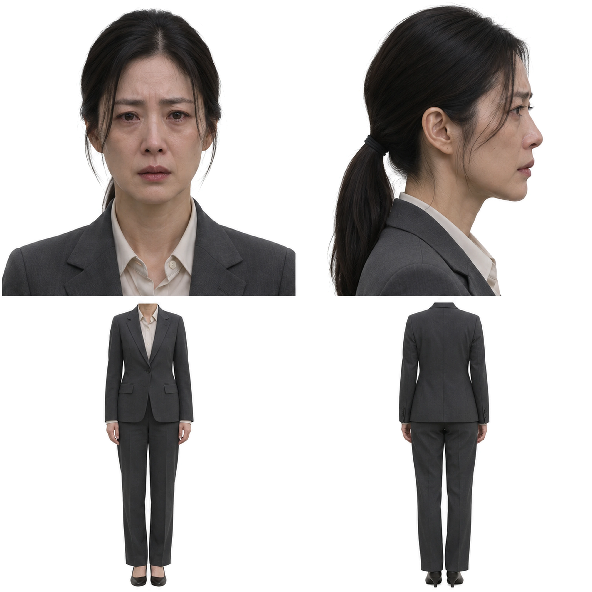
灰西装女职员
发现支付金额异常，之后拿着账单在工位与同事对质。 低马尾、炭灰西装、象牙白纽扣衬衫。手持明细，表演由震惊发展为愤怒。 成片未完整展示的方位按可见造型补全。

白外套女同事
穿白外套的同事，围绕共同报酬和消费与女职员发生争执。 长卷发、白色短外套、酒红裙装，留小金耳饰。 成片未完整展示的方位按可见造型补全。
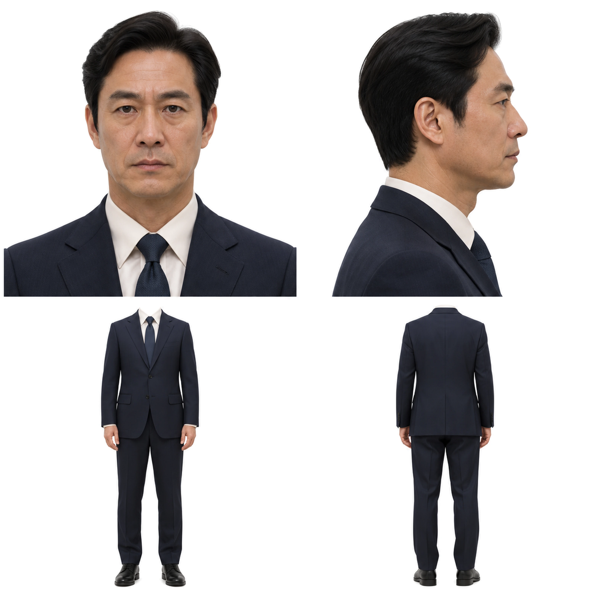
深色西装男主管
在会议间接待及处理支付核验的男士。 午夜蓝西装、白衬衫、深领带，坐在长桌另一侧。 成片未完整展示的方位按可见造型补全。
炭衣男见证人
站在核验区窗边，目睹女职员拿起终端。 炭灰立领上衣、深色长裤，表情沉着。 成片未完整展示的方位按可见造型补全。
黑西装短发女经理
后段在转角办公室交文件并讨论案件。 短波波发，修身黑西装配白上衣，始终站在桌外一侧。 成片未完整展示的方位按可见造型补全。
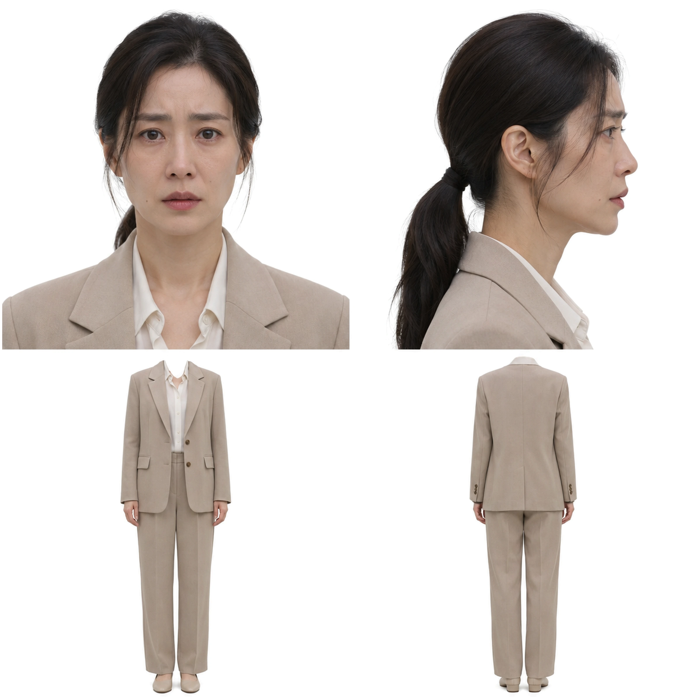
米色西装状态
主线女职员在转角办公室的浅色西装造型。 低马尾，米色西装配白衫。坐着抬头与女经理交流。 成片未完整展示的方位按可见造型补全。
场景资产
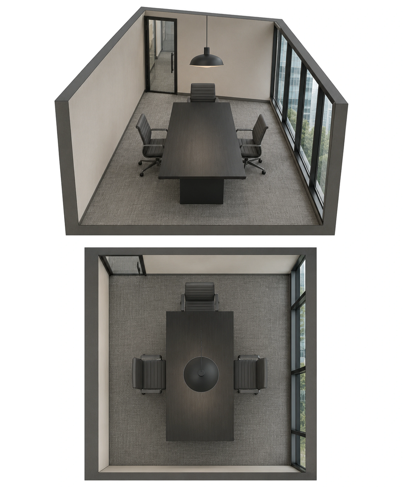
高层小会议间
高层小会议间的场景视觉设定，用于空间布局、光影与镜头背景。

开放办公区
开放办公区的场景视觉设定，用于空间布局、光影与镜头背景。
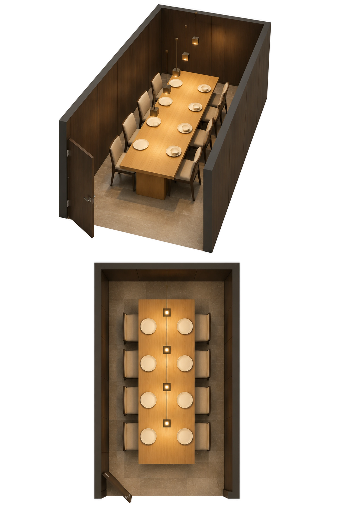
暖色长桌餐厅
暖色长桌餐厅的场景视觉设定，用于空间布局、光影与镜头背景。
浅金手袋柜台
浅金手袋柜台的场景视觉设定，用于空间布局、光影与镜头背景。

转角落地窗办公室
转角落地窗办公室的场景视觉设定，用于空间布局、光影与镜头背景。
道具资产
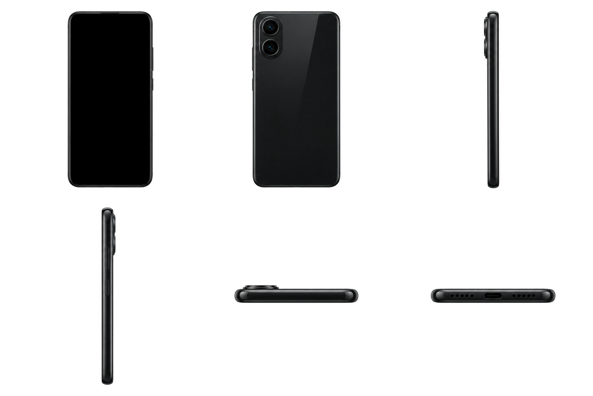
黑色手机
深色平板式手机，正面黑屏、背面镜头组。 供账单/交易核验补镜，屏幕文字为后期。 成片未完整展示的方位按可见造型补全。

账单纸
浅白纵向清单，只有素色横规则。 从女职员持纸反打接餐厅与店铺的金额提示。 成片未完整展示的方位按可见造型补全。
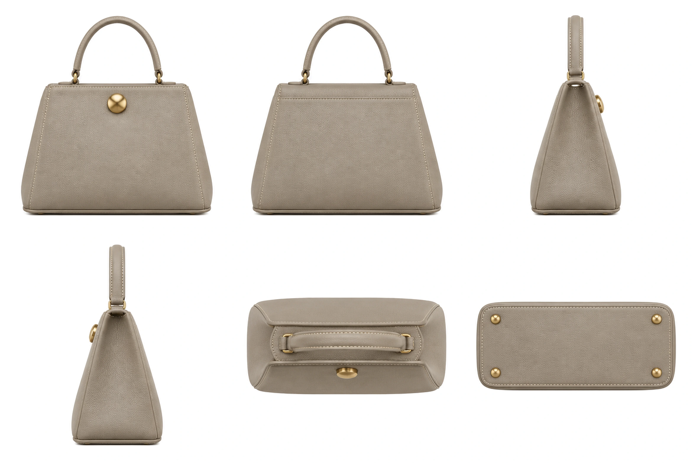
灰米手提包
有金色扣和短弧把的灰米结构手袋。 白外套角色拎起展示，后接柜台消费。 成片未完整展示的方位按可见造型补全。
银灰笔记本电脑
银黑薄机身，折开的屏幕保持素面。 在办公室桌上作为经理谈文件的前景。 成片未完整展示的方位按可见造型补全。
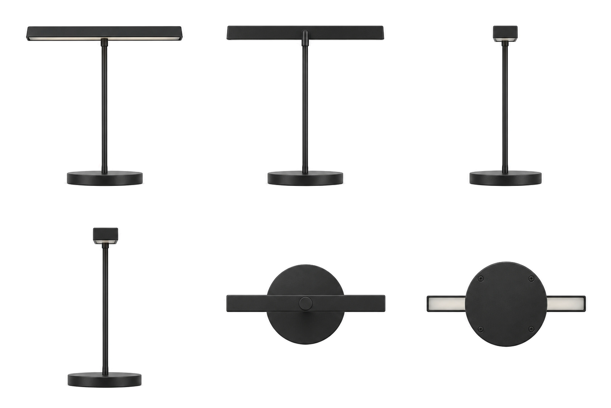
办公桌横臂灯
黑色横灯罩配窄立杆和低圆底座。 摆于窗边、桌内侧，强化办公室构图。 成片未完整展示的方位按可见造型补全。
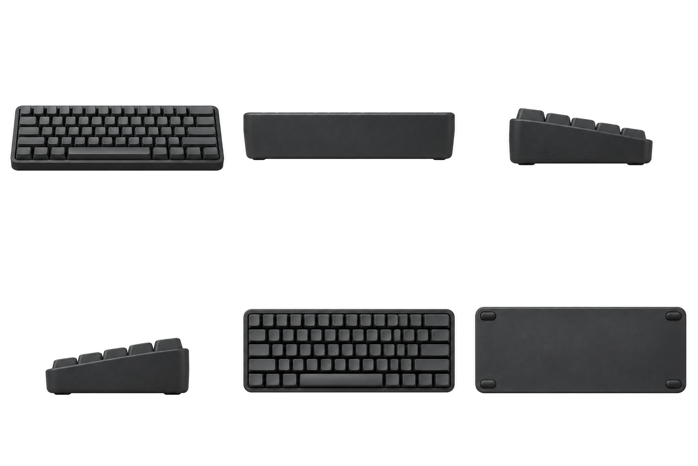
黑色办公键盘
炭黑矮键盘，矩形圆角、素键帽。 放于开放工位前右方。 成片未完整展示的方位按可见造型补全。
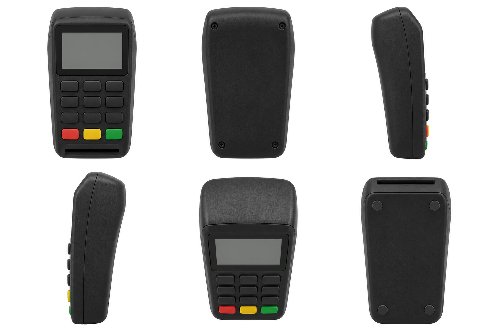
桌面支付终端
斜屏手持终端，深灰机身及实体按键。 桌上先入画，随后女职员双手拿起核对。金额数字另作为画面信息。 成片未完整展示的方位按可见造型补全。
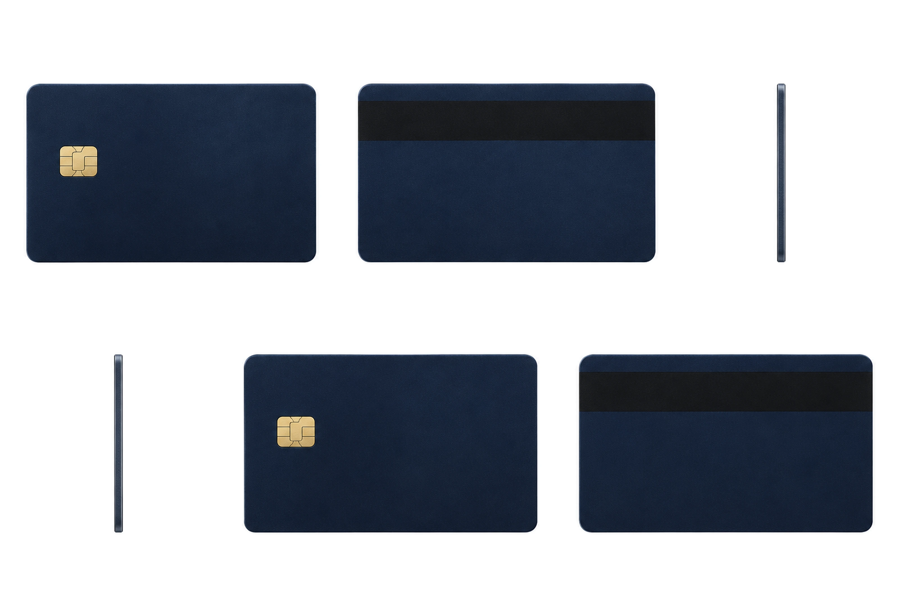
深蓝芯片卡
深蓝卡身与金色芯片，无印刷信息。 终端左侧用于支付场景定位。 成片未完整展示的方位按可见造型补全。
灰色案卷夹
闭合灰封案夹，黑书脊。 经理从桌旁抱起，推到米色西装女职员面前。 成片未完整展示的方位按可见造型补全。
便携三明治餐盒
开口透明餐盒，排列两块三角切三明治。 工位角落的小物，对质时留在桌缘。 成片未完整展示的方位按可见造型补全。
剧本与分镜
完整剧本与分镜脚本
环大陆地区短剧 · 第一集 原片时长 110.64 秒 故事梗概 灰西装女职员在一处接待台核对交易，随后在工位发现账单并当面质问白外套同事。餐厅与手袋店消费的画面穿插说明金额落差，争执升级至公开推搡。最后切到一间管理办公室，女经理把案卷放上桌，话题转到是否继续接案。 人物 灰西装女职员是交易、账单和工位冲突的焦点，米色西装为后段同一主线人物状态。白外套女同事出现在争执与消费插镜中。两名男子在交易现场，短发女经理负责结尾的案卷谈话。 场景 高层小会议间承担核验，开放办公区承担对质。暖色长桌餐厅与浅金手袋柜台是消费插叙。转角落地窗办公室接入案卷谈话。 道具用途 支付终端、深蓝卡、账单和手机组成交易信息。手袋使消费形象具体化。键盘和餐盒确定工位位置。案卷夹、笔记本电脑和横臂灯承担末段办公室动作。 剧本与分镜 按原片抽帧重建的复拍制作稿。画面未能确认的对白、音效与镜头节奏按下表执行。 | 镜号 | 画面内容 | 镜头视角 | 使用资产 | 动作描述 | 台词/旁白 | 音效 | 单镜头时长 | | 01 | 长桌两侧核对支付 | 窗边纵向广角中景 | 灰西装女职员、深色西装男主管、炭衣男见证人、支付终端、深蓝芯片卡、高层小会议间 | 主管指向桌上终端，另一人站在后方观察 | 主管：先核对一下这笔交易。 | 厅内底响 | 8.00秒 | | 02 | 女职员拿起终端，看到屏幕 | 正面偏低中近景 | 灰西装女职员、桌面支付终端、深蓝芯片卡、炭衣男见证人 | 她双手翻起终端，抬头看向炭衣男子 | 屏幕信息：7,000 日元。 女职员：怎么会？ | 按键响、抽气 | 9.00秒 | | 03 | 开放工位，女职员翻账单 | 办公区全景接桌边中景 | 灰西装女职员、开放办公区、账单纸、三明治餐盒、键盘 | 她在工位摊纸查看，其他同事渐近围观 | — | 键盘、人群低语 | 9.00秒 | | 04 | 白外套同事贴到桌边 | 交叉双人近景 | 白外套女同事、灰西装女职员、账单纸 | 白衣女子低声贴近，女职员把纸收在胸前 | 女职员：这张账单是怎么回事？ | 纸张挤压、背景声稍停 | 15.00秒 | | 05 | 手袋被举起展示 | 手袋与侧脸近景 | 灰米手提包、白外套女同事、浅金手袋柜台 | 手从提梁抬起包，让包身露出 | — | 皮革、扣件 | 5.00秒 | | 06 | 长桌餐叙与支出明细 | 餐厅纵深全景接账单插入 | 暖色长桌餐厅、账单纸 | 在多人餐叙画面前放大消费数额 | 画面信息：800,000 日元。 | 餐具、低声交谈 | 8.00秒 | | 07 | 切到手袋柜台的交易 | 侧后中景接票据近景 | 白外套女同事、浅金手袋柜台、灰米手提包、账单纸 | 柜台前递付，金额插入单独合成 | 画面信息：2,400,000 日元。 | 柜台轻响 | 10.00秒 | | 08 | 女职员站起来对质 | 平视交叉近景 | 两位女职员、开放办公区、账单纸 | 她抓住对方手臂询问，两人寸步不让 | 灰衣女职员：报酬我也分给你了。 | 急促对白、纸响 | 8.00秒 | | 09 | 争执后女职员倒在工位前 | 广角大全景 | 灰西装女职员、白外套女同事、开放办公区 | 灰衣女职员退到地上，其他人停在过道两侧 | — | 椅脚划地、人声压低 | 6.00秒 | | 10 | 短发女经理递上案卷 | 桌面斜角双人中景 | 米色西装状态、黑西装短发女经理、案卷夹、银灰笔记本电脑、横臂灯 | 经理从桌边放下案卷，坐着的人抬头 | 经理：按平常的方式处理。 | 文件夹触桌 | 11.00秒 | | 11 | 女经理站在桌边追问接案 | 反向宽景 | 黑西装短发女经理、米色西装状态、转角落地窗办公室 | 经理站定，浅西装女子没有伸手接 | 经理：这件案子不接吗？ | 窗外城市底响 | 13.00秒 | | 12 | 浅西装女子转头看向门口 | 侧颜近景 | 米色西装状态、转角落地窗办公室 | 她听完保持沉默，最后移开目光 | 画外：你还能继续下去吗？ | 短暂停顿后切断 | 8.64秒 | 时长合计 110.64 秒